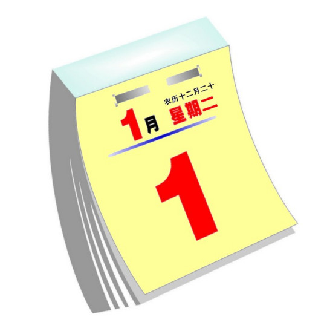
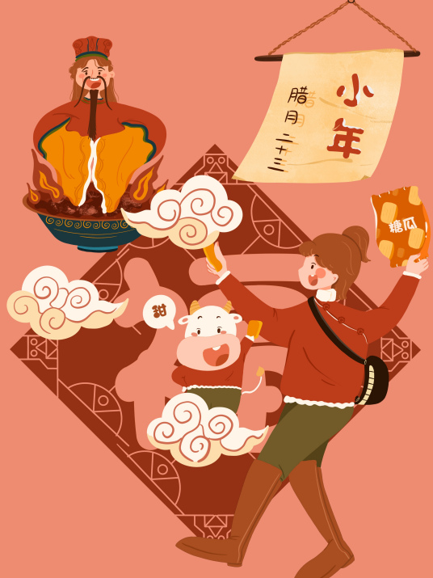
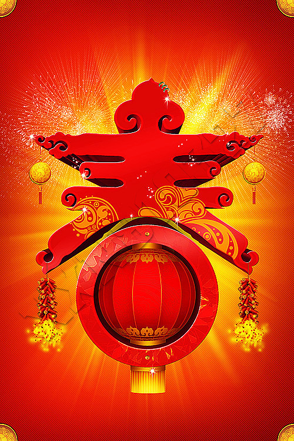
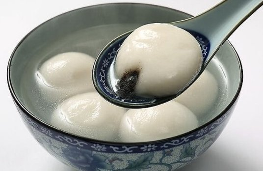

元旦
小年
春节
元宵
新年也是充满希望的一年

元旦，即世界多数国家通称的"新年"，是公历新一年的第一天。元，谓"首"；旦，谓"日"；"元旦"意即"首日"。"元旦"一词最早出现于《晋书》，但其含义已经沿用4000多年。

小年，通常指扫尘、祭灶的日子，被视为“忙年”的开始。

春节是中华民族最隆重的传统佳节，同时也是中国人情感得以释放、心理诉求得以满足的重要载体，是中华民族一年一度的狂欢节和永远的精神支柱。

正月是农历的元月，古人称夜为"宵"，所以把一年中第一个月圆之夜正月十五称为元宵节。